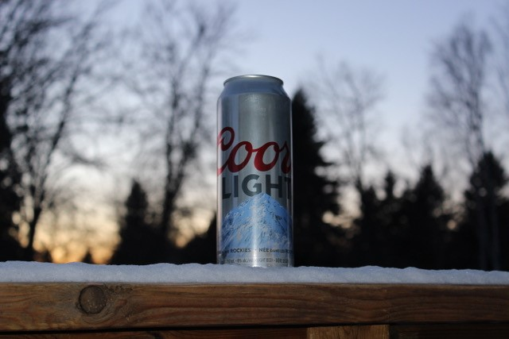
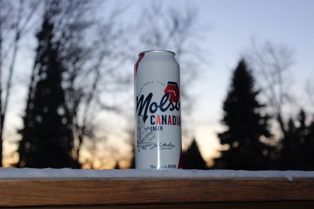

Welcome To Arena Beers
Welcome to your new home for all information when it comes to grog AKA beer. Here we'll put beer in an arena In a fight to see which is the best brew in your life. That's not the only thing we do at Arena beers we also go to your favorite arena and taste the best beers.
When comparing grog there are three main components taste, drinkability, and occasion. Taste is very important if the beer tastes bad you don't wanna drink is straightforward. Drinkability is how easy it goes down your gullet you could ask why has to do with anything but I believe the perfect beer tastes great and is easy to drink you could have some dark beers that taste like chocolate but have a hard time going down because there's so much in the beer. The last factor is drinking for an occasion if you're at a party and you're playing beer pong you're not gonna waste a triple brewed barrel-aged dark stout are you no you're gonna put a pilsner in the Cup and shoot it down so the drink for the occasion is very important.
Battle Zone
Molson Canadian vs Coors Light
 The two beers that are entering the arena today are the two staples at Rogers place Molson Canadian and Coors Light. The occasion is being at the game. The Edmonton Oilers will play their first game on January 13th and because of COVID-19 I cannot go to the rink and test the beers So I'll be doing it at home I bought a king can of each which is 713 milliliters.
As soon as the puck drop I cracked open the first brew which was the Coors Light at first I thought the taste was a little tart but then my palate adapted it tasted like the perfect hockey beer I took a sip and close my eyes and listen to the TV and I felt like I was at the game in real life so I have to give it props for that. The beer was extremely drinkable. It was a classic light beer very smooth and super easy to drink. With two or three sips left the Oilers give up a goal against and the occasion of being at the rink was ruined I wanna be winning when I'm at the games and I want my beer to reflect that.
As the second period started I open up the Canadian taking the first sip the flavors we're much better I wrote down in my notes under view in the beer that this beer tastes better. One of the downsides with that so I found it was harder to drink it took me a lot longer to finish the Canadian than the Coors I don't know if that's if I enjoy it more or Coors makes a more drinkable beer. I continue to watch the game the Oilers continued to lose and the same is the Coors it doesn't change the Oilers lose and the special occasion of the Oiler's first game is ruined.
Canadian win's on taste but Coors wins on drinkability. And now for The X Factor which one is better to drink add an Oilers game they both lose cause the Oilers lost.
It was a tie no one won especially the Oilers